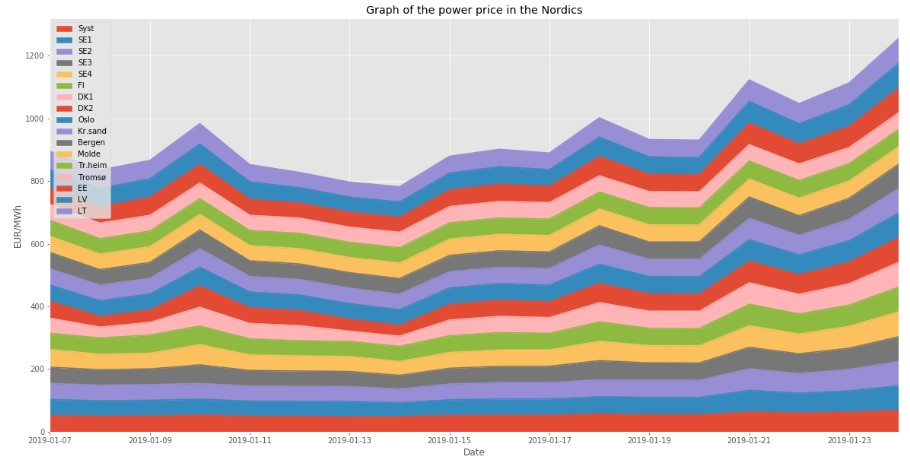

Using Python Data Visualization to analyse and visualize the power market
Visualizing data is an important step when you want to analyze data. With Python you can use matplotlib and seaborn to produce graphs that makes it easier to understand your data.
Download data
A lot of data is stored online or easily available as xlsx or csv-files. In this article, data for power prices in the Nordics have been downloaded from Nordpool, as well as some weather data, and wind power generation data. The data was converted to CSV in Excel and then uploaded to Jupyter Notebook.
Creating the table
Importing the table from CSV-file to Jupyter Notebook is done with the code below. Headers are assigned as well to matching values. The dataframe is stored as df and the code df.head(2) showcases the 20 first rows.
import pandas as pd
import numpy as np
import matplotlib.pyplot as plt
filename = "http://www.thenordicgrid.com/Pleas.csv"
headers = ["Date","Syst","SE1","SE2","SE3", "SE4","FI",
"DK1","DK2","Oslo", "Kr.sand","Bergen","Molde","Tr.heim","Tromsø",
"EE", "LV","LT","co2quotas","dk1wind","dk2wind","oslotemp"]
df = pd.read_csv(filename, names = headers)
df.head(20)
Importing Matplotlib
Next up the matplot library is imported: matplotlib as mpl and matplotlib.pyplot as plt.
# use the inline backend to generate the plots within the browser
%matplotlib inline
import matplotlib as mpl
import matplotlib.pyplot as plt
mpl.style.use('ggplot') # optional: for ggplot-like style
Reversing and locating
All columns are assigned as strings for simplicity. Date is set as index in the dataframe df so that it is easy to locate the different dates if we are looking for a specific date. The dataframe df3 is created storing a reversed version of df, i.e. reversing the rows. Or else the plots would have showcased the dates in the wrong chronological order. df2 is created storing the five first columns. The same is done with df1 for the first 13 columns.
df.columns = list(map(str, df.columns))
df.set_index('Date', inplace=True)
df3 = df.iloc[::-1] #reverse the rows to get dates in the right order on the plots
df2 = df3.iloc[:,0:5] #locate the 5 first columns
df2.head()
df1 = df3.iloc[:,0:13]
df1.head()Area plot
The following code wil produce our first plot. It is an unstacked area plot based on the dataframe df1. By setting stacked equal to True we will produce a stacked area plot. See the difference in the images below the code.
df1.plot(kind='area',
stacked=False,
figsize=(20, 10), # pass a tuple (x, y) size
)
plt.title('Graph of the power price in the Nordics')
plt.ylabel('EUR/MWh')
plt.xlabel('Date')
plt.show()The image above is an unstacked area plot while the image below is a stacked area plot.
Box plots
The next lines of code will display a box plots with data from df2. Annotation will also be added to describe how the price develops. The box plots is very descriptive in itself and is a great way to compare different spot areas and showing the development of prices over time.
df2.plot(kind='bar', figsize=(10, 6), rot=90)
plt.xlabel('Date')
plt.ylabel('System Price [EUR/MWh]')
plt.title('Power price January 2019')
# Annotate arrow
plt.annotate('', # s: str. will leave it blank for no text
xy=(14, 70), # place head of the arrow at point
xytext=(1, 53), # place base of the arrow at point
xycoords='data', # will use the coordinate system of the object being annotated
arrowprops=dict(arrowstyle='->', connectionstyle='arc3', color='blue', lw=2)
)
# Annotate Text
plt.annotate('Steady increase in selected prices in January', # text to display
xy=(4, 59), # start the text at at point
rotation=9, # based on trial and error to match the arrow
va='bottom', # want the text to be vertically 'bottom' aligned
ha='left', # want the text to be horizontally 'left' algned.
)
plt.show()Seaborn Regression Plots
Seaborn regression plots gives you effective regression plots with one line of code. It creates regression plots quicker and more efficient than with matplotlib so that you can spend more time analyzing and visualizing, and less time coding. Seaborn is first installed and imported. The index is reset and put back in as a column in the df dataframe. The variable ax creates the regression plot with the Oslo column as the x-value and oslotemp (average temperature in Oslo on a given date) column as the y-value.
# install seaborn
!pip install seaborn
# import library
import seaborn as sns
# reset the index to put back in as a column in the df dataframe
df.reset_index(inplace = True)
ax = sns.regplot(x='Oslo', y='oslotemp', data=df, color='green', marker='+')
The generated regression plot shows that there is a certain relation between the temperature and power price in Oslo. Let us see how the wind power produced in DK1 relates to the power price in DK1:
ax = sns.regplot(x='dk1wind', y='DK1', data=df, color='blue', marker='.')
There is quite a solid relation between the wind power generated and the power price as expected.
Comparing the two regplots with eachother it is evident that the second one is more precise. Based on that we can conclude, or at least make an assumption, that the wind power production generated in spot area DK1 gives a more precise indication on the power price in DK1 compared to how the temperature in Oslo affects the power price in Oslo. That is good to know for further analysis!
Python is a very strong tool to analyze and visualize the power market. The next article related to Python will involve more statistics and analytics.
Sources and credits
Data from nordpool. Jupyter Notebook used with Python inspired by IBM course material.